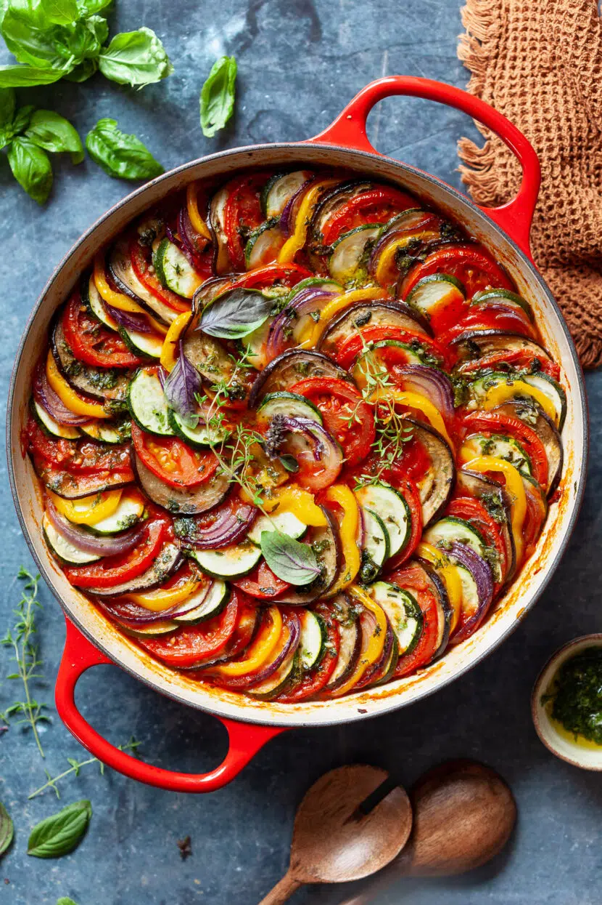

Ratatouille Recipe

Description
Ratatouille is a traditional French vegetable stew
cooked in aromatic herbs and slow-braised to create a rich,
flavorful dish that embodies the essence of Provencal cuisine.
Often served as a side or main course, ratatouille is celebrated
for its vibrant colors and the harmonious combination of seasonal
vegetables.
Ingredients
Piperade
- 2 Red Bellpepper
- 2 tbsp Extra Virgin Olive Oil
- 1 tsp garlic, minced
- ½ cup yellow onion, finely diced
- 12 oz. Tomatoes; peeled, seeded, and finely diced,
juices reserved
- 1 sprig Fresh thyme
- 1 sprig Flat-leaf Parsley
- ½ a bay Leaf
- Salt to taste
Vegetables
- 2 Zucchini
- 1 Japanese Eggplant
- 1 Yellow long Bellpepper
- 2 Red long Bellpepper
- ½ tsp garlic, minced
- 2 tsp Olive Oil
- Fresh Thyme Leaves
- Salt
- Black Pepper, freshly ground
Vinaigrette
- 1 tbsp Extra Virgin Olive Oil
- 1 tsp Balsamic Vinegar
- Thyme
- Salt
- Black Pepper, freshly ground
Steps
- Start by preparing the Piperade for the Ratatouille.
Cut the bell peppers in half and remove the seeds and ribs.
- Heat the oven at 450℉, put the bell peppers with the
skins up on a trey with aluminium foil. Take them out after
15 minutes. Once the peppers have cooled, remove the skin
and cut them into small pieces.
- Cook minced garlic and diced onions in oil till golden.
It should take ≈8 minutes. Next add tomatoes and their
juices, thyme, parsley and bay leaf. Let it simmer for
at least 10 minutes until all the juices are absorbed.
Once finished, add bell peppers and let them simmer for
another 5-6 minutes. Season with salt and pepper and remove
the herb's leaves
- While the piperade is prepared, cut all the vegetables.
To make them the same perfect size, the best way to slice is
to use a mandoline knife.
- Once both piperade and vegetables are ready, grab a round
casserole, spread the piparede on the bottom and position the
vegetables in spirals alternating the colors
(e.g. zucchini, eggplant, yellow bellpepper, zucchini, eggplant,
red bellpepper…etc.). Season with oil, minced garlic, thyme,
salt and pepper.
- Heat the oven at 275℉. Before putting the casserole
in, cover the vegetables with parchment paper.
- Prepare a vinaigrette with oil, balsamic vinegar, thyme,
salt, and pepper. Spread the vinaigrette on top before serving.